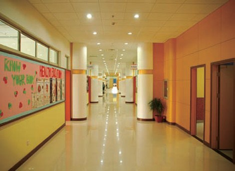

What's this?
This was my homeroom class in Grade 10 - the year I left Shanghai. I was so blessed to have made my closest friends here in this student body, and I am lucky to still keep in touch with them. If you are wondering about the blue jerseys (that was not our official Gym attire), it was a yearly affair called Sports Day, when we have track events and each of our classes had to wear jerseys according to the football team assigned to us. For some reason, we were assigned with Greece... so the blue jerseys it was.
What's this?
These beloved hallways. In Grade 8, for some reason the guys had an obsession with deodorant, so they sprayed excessive amounts not only on their bodies, but throughout the hallways. The hallways smelled like deodorant - it was rather unpleasant. One can also never forget the bathroom rules that this school had. We needed to get a bathroom pass from the teacher before we can go to the bathroom. That is the dumbest idea I had ever encountered.
This?
This pond area served no purpose. We were not allowed to go out there, so in my opinion it was just a huge waste of space.
Wanna see the uniform?
Go Back